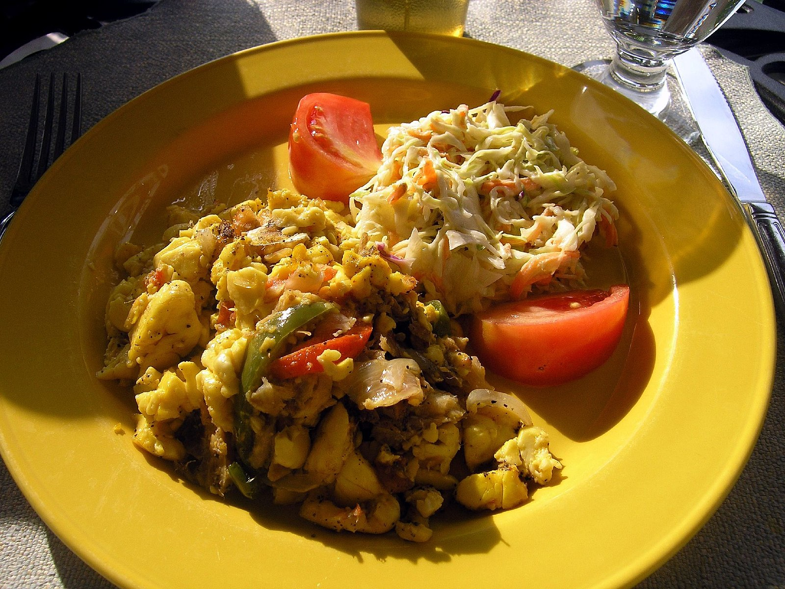

Ackee & Saltfish

Image Source: Wikipedia Commons
Description
On this page you will learn to make Jamaica's national dish. Comprised of spicy flavous and soft textures, this is sure to be something you'll love.
Ingredients
- 2 Canned Ackee
- 1 lb Saltfish
- 1 Onions Sliced
- 1 Small tomato Diced
- 1 Sweet bell pepper Or ½ red and ½ green like I did
- 1 Stalk scallions Chopped
- 2 Sprigs of thyme
- ¼ Scotch bonnet pepper Seeds removed
- ½ tsp Black pepper
- 2 tbsp Cooking oil
Method
- Soak the saltfish for a minimum of two hours in cold water. Pour away the water.
- In a saucepan, place the saltfish and cover with fresh water. Put to boil on medium heat for 15 minutes.
- Removed from heat and pour away the hot water. Wash the fish in cold water to cool it.
- Remove the fish skin and debone the saltfish. Flake the saltfish and set aside.
- On medium fire, heat the oil in a cooking skillet. Add the onions, thyme, tomato, sweet pepper, scotch bonnet pepper, scallions and sauté for 3 minutes.
- Add the flaked saltfish and cook for another 3 minutes.
- Add the ackee, lower the heat and let it simmer for another 10-15 minutes
- Add the black pepper, turn the heat off and serve
Recipe from: Jamaican Foods and Recipes
Back to home